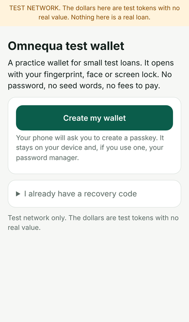
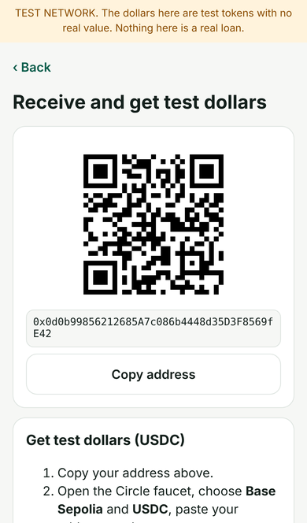
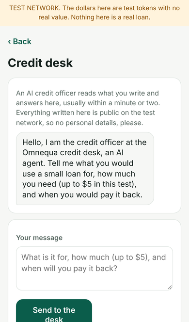
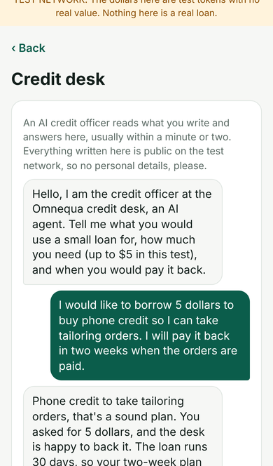
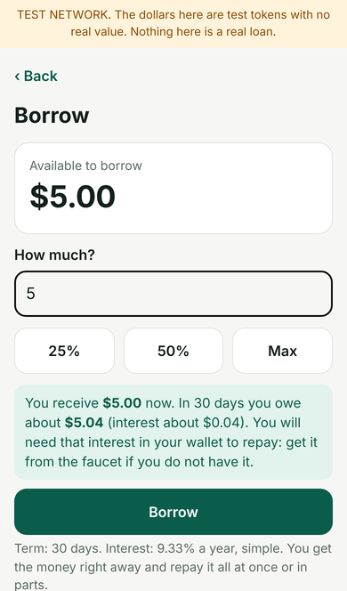
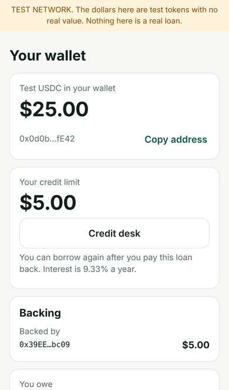
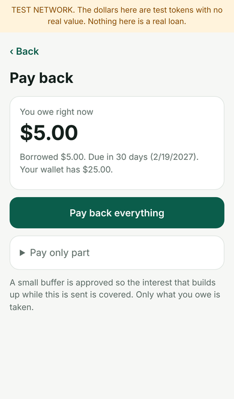
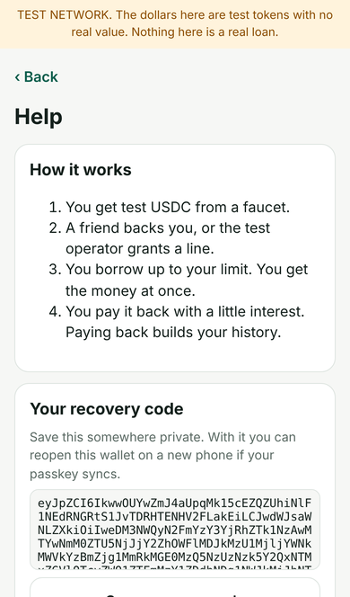

Try our app
A loan from a phone,
with an AI credit officer.
A practice version of our lending app runs on a public test network. Anyone can try it in about ten minutes. The dollars are test tokens with no value, and nothing here is a real loan.
Open that link on your phone. It is a web app: nothing to download, no account, no wallet software. Your phone’s passkey (fingerprint, face or screen lock) is the wallet. Network fees are paid for you during the test.
Put it on your home screen
- iPhone (Safari): open the link, tap the Share button, then Add to Home Screen, then Add.
- Android (Chrome): open the link, tap the three-dot menu, then Add to Home screen or Install app.
After that it opens like any other app, full screen, with its own icon.
The walkthrough
These screens are from a headless test run against a copy of the live test network; your amounts and dates will differ.
Step 1
Open the app and create a wallet
Tap Create my wallet. Your phone asks for its fingerprint, face or screen lock: that passkey is the wallet. There are no seed words and nothing to install first.

Step 2
Get a few test dollars
Tap Receive / get test dollars, copy your address and open the faucet. Choose Base Sepolia and USDC. A minute later the test dollars show in the app. They have no value; you use them later to pay the interest.

Step 3
Ask the credit desk
Tap Credit desk. An AI credit officer asks what the money is for, how much you need (up to $5 in this test) and when you will pay it back. It answers inside the app, usually within a minute. Everything written there is public on the test network, so no personal details.

Step 4
The officer backs you
When the officer agrees, it locks some of the desk’s own stake behind you and your limit goes above zero. Nobody sends anyone an address; the whole interview happens in the app.

Step 5
Borrow
Tap Borrow, type an amount and read what you will owe in 30 days. One passkey approval later the money is in your wallet.

Step 6
Your loan on the home screen
The home screen shows what you owe, when it is due and that interest grows a little each day.

Step 7
Pay back
Tap Pay back. If you are short by the interest, the app points you back to the faucet. Pay everything and the loan closes; the history stays with your wallet.

Step 8
Keep your recovery code
The Help screen shows a recovery code that reopens the same wallet on another phone, and a button to remove the wallet from this one.

What is really happening
The app talks to a small lending pool on Base Sepolia, a public test network. Lenders put test dollars in a shared pool; a borrower can draw on it only against credit that exists: their own history, or a guarantee someone else locks behind them. The credit desk is one such guarantor: an AI agent that holds a small stake and decides, from a short conversation, whether to lock part of it behind you. If you do not pay back, the desk’s stake covers the loss, not a person. The same rules would apply with real money, which is exactly what we are testing before anyone is asked to risk any.
What never happens
No real money, no account, no sign-up, no personal data. The app stores only your passkey’s public key on your phone. What you write to the credit desk is public on the test network, which is why it never asks who you are. Say so, and nobody writes to you again.